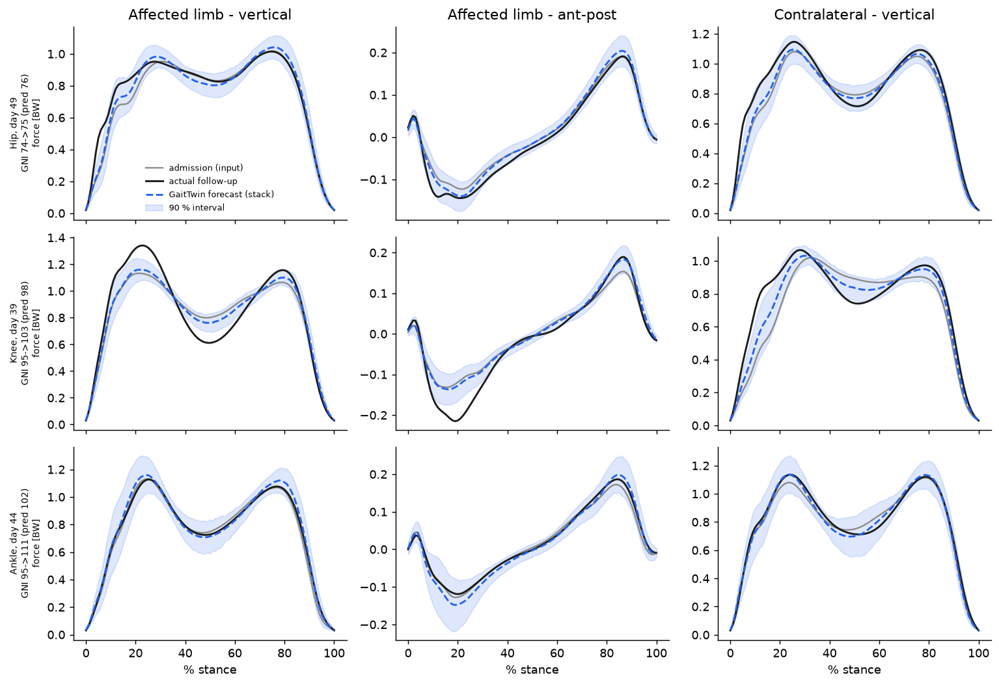
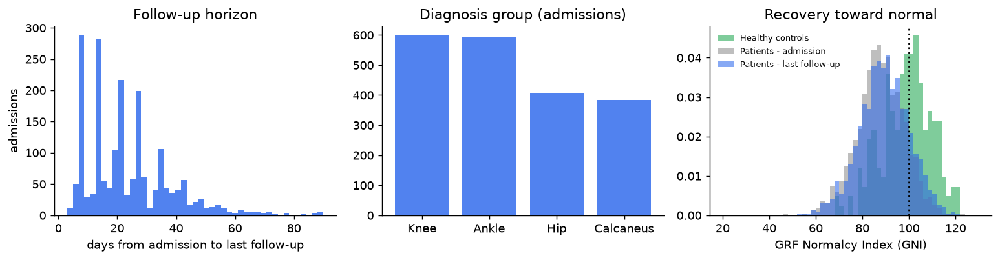
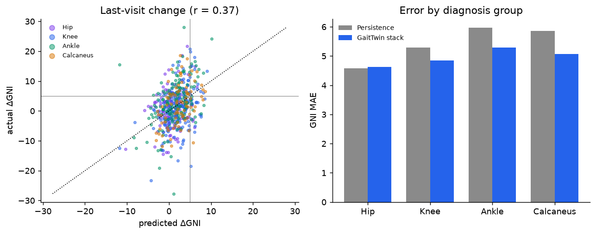
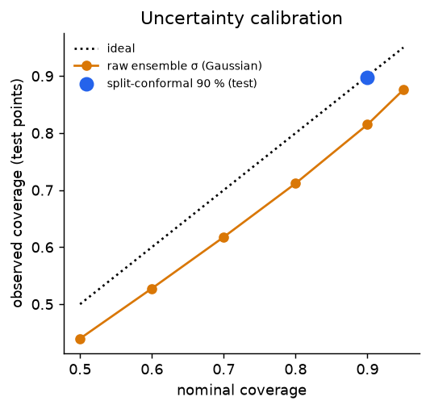
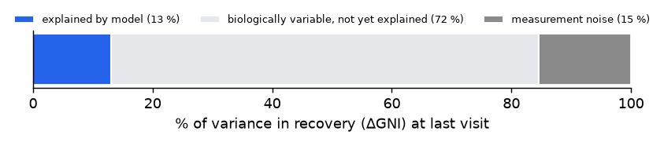
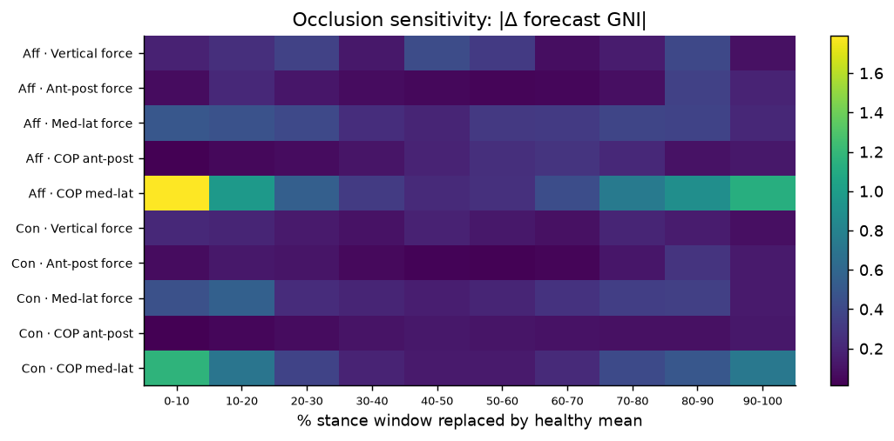
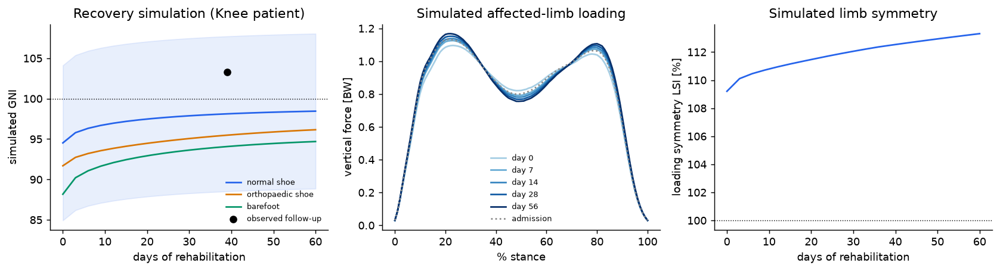

At a glance

The problem
Recovery after lower-limb trauma varies widely between patients. Clinicians set discharge goals and spot non-responders by experience, because no tool says how a patient will walk after N days of treatment. Ground-reaction forces capture loading tolerance, limb symmetry and push-off. They are standard in gait labs, but rich (1,010 numbers per session) and hard to read.

Method
GaitTwin CNN. A 1-D convolutional encoder reads the admission gait. FiLM layers condition it on clinical context (age, BMI, sex, diagnosis group, bilateral involvement, footwear, insole) and on elapsed days. A heteroscedastic β-NLL head predicts the change waveform with a variance per point. Five ensemble members add model uncertainty.
Stack. A validation-chosen blend with PCA + Ridge (weight 0.35 on the CNN).
GRF Normalcy Index. A Gait-Deviation-Index-style score built on a PCA manifold: 100 = healthy, −10 = 1 SD from normal.
Calibration. Split-conformal bands. A validation-fitted ΔGNI recalibration removes a 2–3-point optimism bias, which comes from scoring an averaged waveform.
Protocol. Patient-level train/test split (GaitRec flags), evaluated on the last follow-up, with subject-level bootstrap CIs.
Results
| Model (last follow-up, n = 592) | Waveform RMSE | GNI MAE | r (ΔGNI) | AUROC |
|---|---|---|---|---|
| Persistence (no change) | 0.0315 | 5.36 | — | 0.500 |
| Mean change (class × time) | 0.0281 | 4.98 | 0.348 | 0.661 |
| PCA + Ridge | 0.0255 | 4.96 | 0.347 | 0.661 |
| PCA + Gradient Boosting | 0.0260 | 5.00 | 0.356 | 0.668 |
| GaitTwin CNN ensemble | 0.0266 | 5.05 | 0.339 | 0.647 |
| GaitTwin stack | 0.0254 | 4.94 | 0.366 | 0.669 |
The stack is significantly better than persistence, mean change, gradient boosting and the CNN alone (paired bootstrap, 95 % CI excludes 0). Its margin over Ridge alone is not significant. A severity-aware calibration keeps forecasts unbiased from the most impaired patients (baseline GNI < 70: true +3.2, predicted +4.5) to near-normal ones (≥ 90: true −0.2, predicted 0.0).


What the model teaches us


Simulation

An interactive Streamlit "digital twin" (slider for rehabilitation days, footwear what-if, comparison with the real follow-up) is part of the full project. A live demo is available on request.
Clinical app: upload your own patient
A Streamlit tool built around the questions a rehabilitation doctor asks: how impaired is this patient, where will they be in three weeks, and are they on track?
- Enter patient details. Age, sex, height, mass, injury group, affected side and footwear.
- Upload the force-plate export (CSV or Excel). Column names, trials, sampling length, units (N → × body weight, mm → m) and sign conventions are detected and converted automatically. Each step is reported, and implausible files are rejected.
- Pick a follow-up day and footwear. See the gait score now and forecast with a 90 % range, the chance of a meaningful improvement (≥ 5 points) and when near-normal gait is expected.
- Optional follow-up test. An on-track check returns below expected / lower part of range / on track / better than expected.
Safety flags cover an out-of-distribution gait pattern, a low chance of improvement and persisting asymmetry. One click gives a one-page PDF report for the patient file. Example files and a template are included. Research prototype, not a medical device.
Data & limitations
Data: GaitRec (Horsak et al., 2020, Scientific Data, CC BY 4.0), one Austrian rehabilitation centre.
Limitations: a single centre with observational data; ground-reaction forces only, with no kinematics, EMG or patient-reported outcomes; no external validation yet. Research and education only, not a medical device.